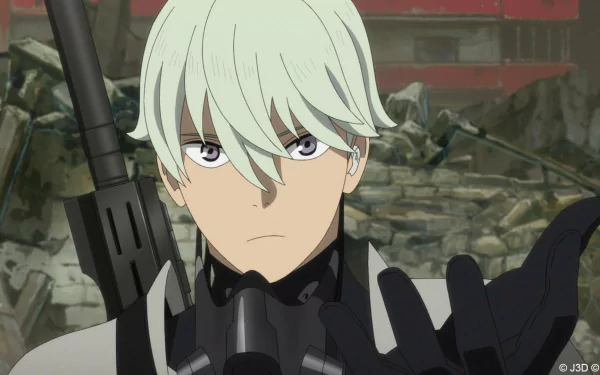

My name is Yusuf Hamu, I school in st.John Tala HighSchool. I am going to form 3 in 2025. I live in Kawangware Naivasha road. I am currently pursuing my career of being an Aerological Engineer. My KCSE targert is to obtain an overall grade of B- and join Nairobi University or to be a scholar in an ubroad University
The image is obtained from the anime kaiju no.8 which was relesed this year
My favourite place in the world is Mecca in UAE. My favourite ice cream flavour is strawberry.
My mostly watched anime is Tokyo revengers. My favourite animal is a highbrid of a wolf and a dog.
| English | Mathematics | Kiswahili |
|---|---|---|
| C+ | C+ | C- |